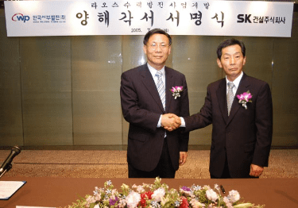
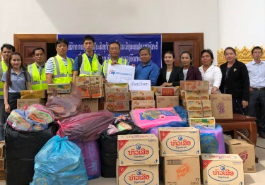
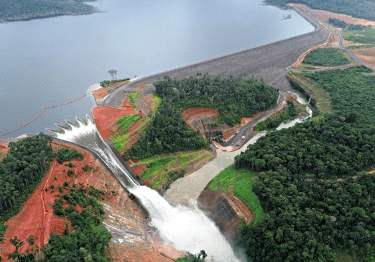
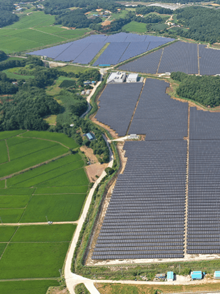
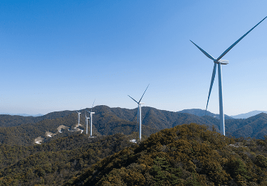

2005년 7월 19일, 한국서부발전은 SK건설과 라오스 세남노이 410MW 수력발전사업 공동개발 MOU를 체결하며 본격적인 사업에 참여했다.

IMAGE2011. 08 / 라오스 전력 프로젝트 공동개발에 대한 양해각서 체결
라오스 세남노이 410MW 수력발전사업은 라오스 남부 참파삭주(州)와 아타푸주(州)에 걸쳐 위치한 볼라벤 고원에 건설된 수력발전소에서 전력을 생산해 장거리 송전선을 통해 태국 및 라오스에 공급하는 사업이다.
한국서부발전이 최초로 사업개발, 전력구매계약(PPA) 체결, 금융계약 체결, 건설공사 시행, 준공까지 전 과정을 수행하는 해외SPC 사업이었다.
그러나 세남노이 수력발전사업은 발전소 준공을 목전에 둔 2018년 7월 큰 위기를 맞았다. 세남노이 수력발전소의 저수지 조성을 위해 축조한 5개의 보조댐 중 하나가 폭우로 유실되어 인근 7개의 마을에서 인명피해가 발생한 것이다.
한국서부발전은 비상대책반을 구성, 사고 발생 8일 만인 7월 31일부터 11월 8일까지 12차에 걸쳐 노사합동 구호봉사단을 파견했다. (이재민 임시거주용 야외텐트 설치 및 물품 지원, 방역활동 및 환경 정화, 이발봉사, 피해지역 청소년 놀이활동, 피해아동 심리치료 활동 등 적극적인 구호활동을 전개했다.)

IMAGE2018. 07. 27 / 라오스 긴급 구호활동 전개
또한 보조댐 건설 및 보강 공사 전체 기간 436일 중 373일 동안 철야작업을 실시하며 조속한 복구공사를 위한 노력에도 최선을 다했다.
이같은 피땀 어린 노력의 결과 상업운전 지연을 10개월로 최소화해 2019년 12월 6일, 세남노이 수력발전사업 상업운전을 개시할 수 있었다.

IMAGE라오스 세남노이 수력발전소
CHAPTER7
유럽 신재생 발전사업 참여로 해외사업 개척
한국서부발전은 탈석탄 기조가 가속화되고 있는 해외 발전시장 환경을 반영해 신재생 발전사업을 집중 개발하는 방향으로 해외사업 전략을 수립했다.
2020년 6월 핀란드의 ‘아담스 73.2MW 육상풍력 발전사업’에 참여했다. 지분 29.5%를 확보해 이를 통해 2020년 배당금과 주주대여금 이자 등 약 23억 원의 수익을 달성했다.
이를 기반으로 한국서부발전은 2021년 3월에는 네덜란드에 유럽지주사를 설립하고 세계 재생에너지 시장으로 가는 길목인 유럽 신재생 시장공략을 본격화했다.
스웨덴 중부 앙게(Ange)시 인근에 56기 풍력발전기를 건설하고 운영하는 ‘클라우드 241MW’ 사업을 발굴해냈다.
한국서부발전은 유럽에서도 좀처럼 찾기 힘든 30년 장기 전력판매계약이 체결된 이 사업의 지분 25%를 확보했으며, 특히 400억 원 상당의 국내 풍력타워 56기를 공급, 국내 금융과 기업의 동반 해외진출 사례로 주목을 받았다.
CHAPTER8
사회적 가치를 창출하는 신재생에너지 선도와 신사업개발
한국서부발전은 신재생에너지 확대정책에 부응하여 친환경 전원으로부터 새로운 성장 동력을 확보하고자 2030년까지 전체 발전량의 25% 이상을 신재생에너지로 공급하는 것을 목표로 ‘신재생에너지 3025 달성 로드맵’을 수립했다.
태양광발전사업, 풍력을 이용한 ‘윈드파워 3·3·3사업’, 연료전지 사업을 확대해 가고 있다.

IMAGE충남 태안군에 위치한 삼양태양광 발전소
대표적인 태양광 발전소로는 태안 안면도에 미사용중인 양식장 부지를 활용해 조성한 삼양태양광 17MW(ESS 49MWh) 국내 염해농지개발 1호 사업인 전남 신안 안좌도 태양광 96MW(ESS 340MWh) 무안공항에 조성해 일조량이 풍부한 무안 태양광 81MW(ESS 275MWh)이 있다.
2030년까지 육상풍력 300MW, 해상풍력 3GW 건설을 목표로 하는 ‘윈드파워 3·3·3’ 프로젝트의 일환으로 2021년 6월, 강원도 영월군에 발전용량 46.2MW 규모의 ‘영월 에코윈드 풍력’ 프로젝트에 착수했고 11월에는 18MW 규모의 장흥풍력발전단지 건설을 완료했다.

IMAGE장흥풍력
2014년부터 서인천발전본부 내에 1단계부터 5단계까지 연료전지 사업을 추진해왔으며, 천안 청수, 화성 남양, 의왕까지 꾸준하게 진행해 현재 연료전지 발전 용량이 111.9MW 규모까지 확대되고 있다.